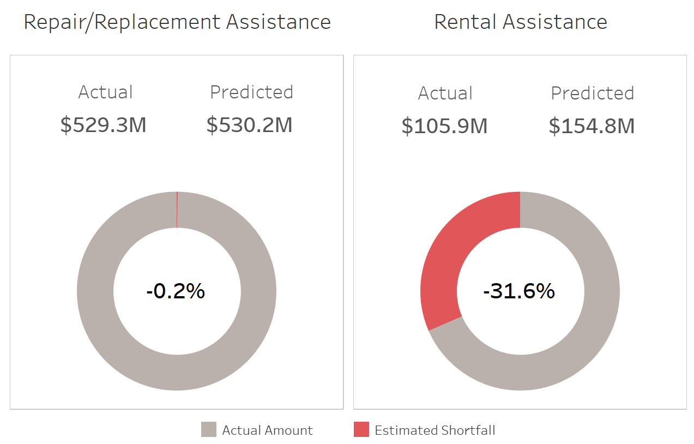

Results
The Random Forest Regressors predicted the relevant components of the Housing Assistance program and the results indicate that Puerto Rico did not receive an entirely equitable allocation of Housing Assistance aid, compared with Florida and Texas.
The Repair/Replacement Assistance predictions were very similar to the actual amount of aid allocated, differing by just -0.2%. This is a reassuring finding, as housing repairs and replacement homes amounted to $529M and accounts for 83% of all Housing Assistance aid allocated by FEMA in response to Hurricane Maria. This findings reinforces one of the guiding principles which underpins the Housing Assistance Program - that aid is allocated consistently. That is, based on the damages sustained, a consistent amount of aid has been allocated for households that were inspected.
For Rental Assistance, the model however predicted that $155M should have been paid out in aid, 46% more than the $106M actually allocated. Put another way, the $49M gap indicates that Puerto Rico received 32% less in Rental Assistance aid than would otherwise be expected, based on the monetary amounts awarded to Florida and Texas.
Rental Assistance provides impacted households with a financial stop-gap which allows them to transition to more habitable accommodation, if available. Analysis of FEMA’s IHP Valid Registrations dataset revealed that approximately 20% of program applicants were unable to claim Rental Assistance aid, due to a lack of alternative housing in Puerto Rico. A likely explanation for this is that the entire island was decimated by Hurricane Maria and unlike most mainland U.S. states, Puerto Rico does not have any neighbouring states within which residents can seek refuge. Therefore, Puerto Rico presents somewhat of a unique case to FEMA in terms of their disaster preparedness and recovery process.
Every county in Puerto Rico was estimated to have experienced a shortfall in Housing Assistance aid, relative to Florida and Texas. On average, Puerto Rico received a shortfall of 7.3% and this was primarily driven by the Rental Assistance gap described previously. Interestingly, the largest estimated gap (-15.9%) occurred in San Juan Municipio, which encompasses the island’s capital city of San Juan, and is the most populous county in Puerto Rico. A plausible explanation is that San Juan also has the largest percentage of renters of all counties, accounting for 46% of households. This likely contributed to a greater influx in Rental Assistance applications, many of which were not allocated aid due to a lack of alternative housing being available.
Another county of note is Ponce Municipio, estimated to have experienced a shortfall of 6.7% in Housing Assistance aid. Ponce sustained the largest amount in FEMA-estimated damages ($47M) and similarly received the most in Housing Assistance aid ($26M). The amounts awarded for housing repairs and replacements homes was the most of any county. Ponce also had a relatively low proportion of rental assistance applications which explains why the county experienced a more favorable Housing Assistance shortfall than San Juan. For reference, Ponce and San Juan were allocated similar amounts in Housing Assistance aid, $26M and $24M respectively, yet San Juan residents were unable to benefit from aid to the same extent.